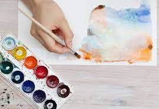
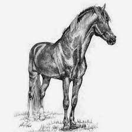
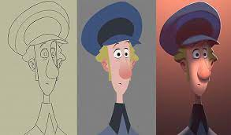

Mis Hobbies
Acuarelas
es una técnica sobre papel o cartulina con colores diluidos en agua. También es el nombre de la técnica empleada en este tipo de pintura y de los colores con los que se realiza. Los colores utilizados son más o menos transparentes según la cantidad de agua con la que se mezcla, y a veces dejan ver el fondo del papel, que suele ser blanco y que actúa como un verdadero tono.
Lapiz y Carboncillo
Sirve para delimitar una silueta o algún rasgo más concreto y detallado. También se coloca la barra perpendicular al papel y se gira sobre ella misma para dibujar puntos gruesos. Brinda mayor estabilidad para realizar líneas finas prolongadas .
Animación
Es la técnica que da sensación de movimiento a imágenes, dibujos, figuras, recortes, objetos, personas, imágenes computarizadas, fotografiando o utilizando minúsculos cambios de posición para que, por un fenómeno de persistencia de la visión, el ojo humano capte el proceso como un movimiento real.
